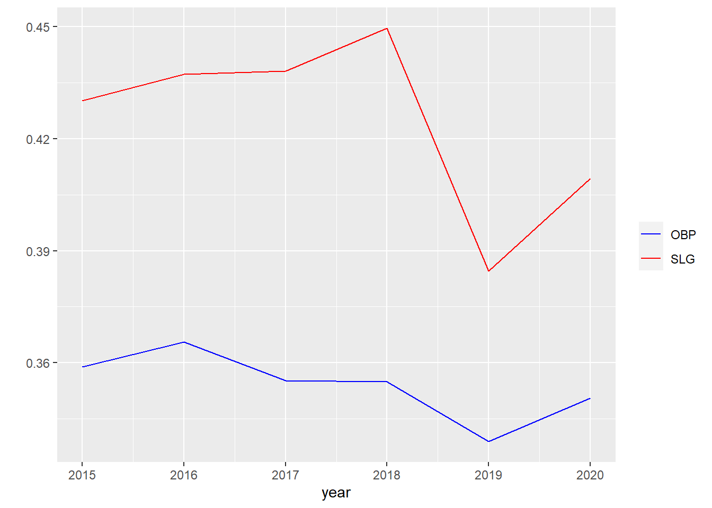

As discussed in check-in 1, my research topics are as follows. “Does the baseball manager’s intervention in games improve the team’s scoring ability?”
The main concepts of the research topic are first “scoring”. This is a simple concept that does not require a separate operational definition. You just have to find and compare scoring column in the data frame. The next concept is “intervention in the game.” This can be defined in various ways. Since the purpose of this study is not to discuss these topics, in order to simplify the research problem, I will define intervention in the game as the concepts of “bunt” and “stolen attempt.” In a baseball game between a pitcher and a batter, a bunt that sacrifices batter himself to advance a runner and a steal to send another base is a difficult choice for a batter or runner without the manager’s instructions, or at least acquiescence. There is also a great deal of discussion about this topic, but in this study, I will briefly summarize it and move on.
To measure the concept of intervention defined from this perspective, this study defines intervention as the sum of bunt (sacrifice, sh) and steal attempt (sb+cs). In other words, in this study, “intervention in the game” is operatively defined as sh+sb+cs.
Research Design
This research problem can be approached in various ways. First of all, I can think of a way to simply compare the average score of a team that has a lot of operational intervention and a team that does not. Next, the correlation between the frequency of intervention in the game and the score can be reviewed. In other words, through the t-test, it is possible to examine whether there is a difference between average scores between the two groups and how the correlation between game intervention and scores appears through correlation analysis.
However, this is a simple approach that does not take into account the characteristics of baseball. The environment of baseball is different every year. Numerous variables such as the number of participating teams, the level of players, climate, and stadiums change the pattern of scoring every year. From this point of view, it may be more reasonable to select and analyze specific years with similar league environments rather than using all data for analysis.
The next thing to consider is that each team has a different batting ability involved in baseball’s scoring. For example, a team with strong basic offense naturally scores more points than a team with weak basic offense. Therefore, these points need to be considered as well.
From this point of view, I will limit the scope of the analysis to a specific year after considering various variables. I will also consider analytical methods that take into account the team’s basic offense. Fortunately, there are several ways to get expected scores, and I will use these methods to find the difference between the actual score of a team with a lot of managerial intervention and the expected score and compare it to a team that does not.
New names:
Rows: 313 Columns: 28
── Column specification
────────────────────────────────────────────────────────
Delimiter: "," chr (1): team dbl (27): ...1, year, game, win, lose, tie,
run_scored, run_allowed, batters...
ℹ Use `spec()` to retrieve the full column specification for this data. ℹ
Specify the column types or set `show_col_types = FALSE` to quiet this message.
• `` -> `...1`
First of all, let’s compare the difference in the scores of teams with many manager’s interventions and those who don’t. To this end, teams with more than average manager intervention and teams that do not are classified by year. According to the previous operational definition, the sum of steal attempts (stolen base(sb) + caught stolen(cs)) and bunt(sacrifice hit, sh) is considered as the frequency of manager intervention, so the average number of manager interventions of each team by year is calculated, and the higher team is classified into the high group and lower team is classified into the lower group.
Code
# making average variables by years# for sh## create an empty data frame to store the resultssh_df <-data.frame(year =integer(), avr_sh =numeric())## loop over the yearsfor (i in1982:2020) {## filter the data for the current year and calculate the sum of sh variable year_sh <- kbo_df %>%filter(year == i) %>%summarize(year_av_sh =sum(sh)/n()) %>%pull(year_av_sh)## add the result to the data frame sh_df <-rbind(sh_df, data.frame(year = i, avr_sh = year_sh))}# for sbsb_df <-data.frame(year =integer(), avr_sb =numeric())for (i in1982:2020) { year_sb <- kbo_df %>%filter(year == i) %>%summarize(year_av_sb =sum(sb)/n()) %>%pull(year_av_sb) sb_df <-rbind(sb_df, data.frame(year=i, avr_sb=year_sb))}# for cscs_df <-data.frame(year =integer(), avr_cs =numeric())for (i in1982:2020) { year_cs <- kbo_df %>%filter(year == i) %>%summarize(year_av_cs =sum(cs)/n()) %>%pull(year_av_cs) cs_df <-rbind(cs_df, data.frame(year=i, avr_cs=year_cs))}# print the results data framesh_df
# merge those dataint_df<-merge(merge(sh_df, sb_df, by ="year", all =TRUE), cs_df, by="year", all=TRUE)# left join to original datatot_df<-left_join(kbo_df, int_df)
Joining with `by = join_by(year)`
Code
# making intervention variablestot_df<-tot_df %>%mutate(st_att=sb+cs, inter = sh+st_att, avr_inter=avr_sh+avr_sb+avr_cs)tot_df[, c('year','team','sh','st_att','inter','avr_inter')]
# making intervention type variablestot_df<-tot_df %>%mutate(inter_fre=ifelse(inter>avr_inter, "high", "no"))tot_df[,c('year', 'team', 'inter_fre')]
# A tibble: 313 × 3
year team inter_fre
<dbl> <chr> <chr>
1 1982 Bears high
2 1982 Giants no
3 1982 Lions high
4 1982 Tigers high
5 1982 Twins high
6 1982 Unicorns no
7 1983 Bears no
8 1983 Giants no
9 1983 Lions no
10 1983 Tigers high
# … with 303 more rows
The necessary processing has been completed. Let’s look at the frequency of groups with high and low interventions by year.
The number of high and low groups is almost the same because they are divided into teams that are higher than average and those that are not.
Now, let’s compare the average scores between the two groups. (Since the study was a population, the average was simply compared instead of the t-test.)
Code
# comparing average scoretot_df %>%group_by(inter_fre) %>%summarise(mean_score=mean(run_scored))
# A tibble: 2 × 2
inter_fre mean_score
<chr> <dbl>
1 high 595.
2 no 594.
There is little difference in the average score between the two groups. In other words, the analysis classified in this way did not produce meaningful results.
Raising the criteria for determining a high degree of intervention
Since the previous simple classification did not have much meaning, I further strengthened the criteria for classifying the frequency of intervention. This time, the group that intervened more than 1 standard deviation from the average was divided into a high group, the group that intervened less than 1 standard deviation from the average was divided into a low group, and the rest into a normal group.
Code
# making sd of intervention by each yearsd_int<-data.frame(year =integer(), sd_i=numeric())for (i in1982:2020) { year_sd <- tot_df %>%filter(year == i) %>%summarize(year_sd_int =sd(inter)) %>%pull(year_sd_int) sd_int<-rbind(sd_int, data.frame(year = i, sd_i= year_sd))}tot_df<-left_join(tot_df, sd_int)
Joining with `by = join_by(year)`
Code
# making three type variablestot_df<-tot_df %>%mutate(inter_fre_sd=ifelse(inter>avr_inter+sd_i, "high", ifelse(inter<avr_inter-sd_i, "low", "normal")))tot_df[, c('year','team','run_scored', 'inter_fre_sd')]
# A tibble: 313 × 4
year team run_scored inter_fre_sd
<dbl> <chr> <dbl> <chr>
1 1982 Bears 399 normal
2 1982 Giants 353 normal
3 1982 Lions 429 normal
4 1982 Tigers 374 normal
5 1982 Twins 419 normal
6 1982 Unicorns 302 low
7 1983 Bears 418 normal
8 1983 Giants 370 normal
9 1983 Lions 448 normal
10 1983 Tigers 423 high
# … with 303 more rows
As a result, a total of 313 team data from 1982 to 2020 were divided into 48 high groups, 53 low groups, and 212 normal groups. Now, I compared the average score between these three groups.
Code
# comparing average scorestot_df %>%group_by(inter_fre_sd) %>%summarise(mean_sco=mean(run_scored))
# A tibble: 3 × 2
inter_fre_sd mean_sco
<chr> <dbl>
1 high 610.
2 low 596.
3 normal 591.
The team that intervenes a lot shows a high average score. However, even the low intervention team showed higher scoring ability than the average team. It seems that something further analysis is needed.
Correlation Analysis between Intervention Frequency and Score
Next, beyond a simple average comparison between groups, the correlation between the frequency of game intervention and scores was examined.
Call:
lm(formula = run_scored ~ inter, data = tot_df)
Residuals:
Min 1Q Median 3Q Max
-334.31 -85.82 2.56 91.53 323.55
Coefficients:
Estimate Std. Error t value Pr(>|t|)
(Intercept) 706.1534 36.5710 19.309 < 2e-16 ***
inter -0.4656 0.1499 -3.106 0.00207 **
---
Signif. codes: 0 '***' 0.001 '**' 0.01 '*' 0.05 '.' 0.1 ' ' 1
Residual standard error: 130.8 on 311 degrees of freedom
Multiple R-squared: 0.0301, Adjusted R-squared: 0.02698
F-statistic: 9.65 on 1 and 311 DF, p-value: 0.002068
In this way, there is a negative correlation between game intervention and scoring. Even from the regression equation between the two variables, it can be seen that the coefficient attached to the game intervention variable is negative.
I separated the steal attempt and the bunt and examined it in more detail.
Code
# Stolen attempt and bunt separationcor(tot_df$run_scored, tot_df$sh)
Call:
lm(formula = run_scored ~ sh + st_att, data = tot_df)
Residuals:
Min 1Q Median 3Q Max
-350.17 -81.72 1.41 94.93 310.52
Coefficients:
Estimate Std. Error t value Pr(>|t|)
(Intercept) 711.3843 36.2739 19.611 < 2e-16 ***
sh -1.1214 0.2881 -3.892 0.000122 ***
st_att -0.1898 0.1812 -1.048 0.295524
---
Signif. codes: 0 '***' 0.001 '**' 0.01 '*' 0.05 '.' 0.1 ' ' 1
Residual standard error: 129.5 on 310 degrees of freedom
Multiple R-squared: 0.05166, Adjusted R-squared: 0.04554
F-statistic: 8.444 on 2 and 310 DF, p-value: 0.0002687
Both steal attempts and bunt variables show a negative correlation with scoring.
Why are the average comparison and correlation analysis results different?
As pointed out earlier, there are countless variables that affect baseball’s score, and it is likely that the result is that the variable called “scoring environment,” which is generally batter-friendly and pitcher-friendly, is not considered. In other words, the difference in average scores that occur by year is not reflected in this simple comparison. For example, if the average score per game in one year is 12 points, and if it is only 8 points in another year, an analysis that ignores these differences will not be valid.
In consideration of these points, the analysis was conducted in consideration of the scoring environment of baseball.
Analysis considering scoring environment
Review Analysis Scope
Through the boxplot figure, the distribution of scores and game intervention by year was briefly examined.
The left is a boxplot diagram showing the distribution of the average score per game and the right is the distribution of the average number of interventions per game. As expected, the year-to-year variation is significant. Scores are generally up and down and intervention is down.
We looked more closely at how the average score and batting average per game have changed year by year. Here, the batting average is calculated as hit/ab (at bat) as the ratio of hits at bat.
Code
# calculate batting average of each year# at batab_year<-data.frame(year =integer(), at_bat=numeric())for (i in1982:2020) { year_ab <- tot_df %>%filter(year == i) %>%summarize(year_ab_sum =sum(ab)) %>%pull(year_ab_sum) ab_year<-rbind(ab_year, data.frame(year = i, at_bat= year_ab))}# hitshit_year<-data.frame(year =integer(), hits=numeric())for (i in1982:2020) { year_hit <- tot_df %>%filter(year == i) %>%summarize(year_hit_sum =sum(hit)) %>%pull(year_hit_sum) hit_year<-rbind(hit_year, data.frame(year = i, hits= year_hit))}batting_average<-merge(ab_year, hit_year, by ="year", all =TRUE)batting_average<-batting_average%>%mutate(batting_average=hits/at_bat)# calculate average score of each year## sum of scorescore_year<-data.frame(year =integer(), score=numeric())for (i in1982:2020) { year_score <- tot_df %>%filter(year == i) %>%summarize(year_score_sum =sum(run_scored)) %>%pull(year_score_sum) score_year<-rbind(score_year, data.frame(year = i, score= year_score))}## total gamesgames_year<-data.frame(year =integer(), gp=numeric())for (i in1982:2020) { year_games <- tot_df %>%filter(year == i) %>%summarize(year_games_sum =sum(game)/2) %>%pull(year_games_sum) games_year<-rbind(games_year, data.frame(year = i, gp= year_games))}average_score<-merge(score_year, games_year, by ="year", all =TRUE)average_score<-average_score%>%mutate(average_score=score/gp)
It can also be seen that the league’s batting and scoring environment is changing significantly every year.
In the end, it is judged that choosing an appropriate range is good for achieving more rigorous results. The question now is how to determine the scope.
Considering that the trend of scoring and batting average has not changed significantly since 2015, and that 10 teams have participated in the KBO League since 2015, the target of the analysis was set from 2015 to 2020.
Call:
lm(formula = run_scored ~ sh + st_att, data = df_2015)
Residuals:
Min 1Q Median 3Q Max
-191.266 -80.470 5.174 61.712 194.576
Coefficients:
Estimate Std. Error t value Pr(>|t|)
(Intercept) 719.96961 59.16131 12.170 <2e-16 ***
sh 0.05624 0.59915 0.094 0.926
st_att 0.22720 0.35482 0.640 0.525
---
Signif. codes: 0 '***' 0.001 '**' 0.01 '*' 0.05 '.' 0.1 ' ' 1
Residual standard error: 93.51 on 57 degrees of freedom
Multiple R-squared: 0.007615, Adjusted R-squared: -0.02721
F-statistic: 0.2187 on 2 and 57 DF, p-value: 0.8042
Although the explanatory power is low, both steal attempts and bunt show a positive correlation with scoring. These results show a different aspect from the recently accepted perception that “operation in baseball negatively affects the team’s offensive power.” Is Korean baseball different from American baseball? I did some more analysis. First, I conducted a polynomial regression analysis.
Although the model’s explanatory power has increased slightly, the positive correlation between match intervention and scoring continues to appear. (Since it is a quadratic equation, the correlation between scoring and intervention is negative until a specific level of intervention.)
Analysis using expected score
As a result of the analysis so far, the results were different from the results of recent studies.
From now on, I will analyze the effect of the manager’s intervention in the game using the concept of expected scores.
First, I will introduce the concept of expected score. The score of baseball is caused by various variables working together. In other words, if the runner gets on base due to hits and walks, and the follow-up batter hits again, the score will be scored. In other words, indicators such as hits and walks and scores have a high correlation, and outs do not.
Using this concept, a regression model between batting indicators such as hits and walks of the team and scores can be obtained, and expected scores can be obtained by substituting each team’s batting indicators into the regression model obtained in this way.
Now, by looking at the difference between the expected score and the actual score obtained by each group divided by the manager’s intervention, we can see whether the manager’s intervention improves the actual score compared to the team’s expected score.
Then, first, the regression equation was obtained.
Call:
lm(formula = run_scored ~ hit + double + triple + hr + bb + ibb +
hbp + so + sf + gidp, data = df_2015)
Residuals:
Min 1Q Median 3Q Max
-54.750 -9.564 0.773 12.749 33.562
Coefficients:
Estimate Std. Error t value Pr(>|t|)
(Intercept) -413.66438 82.53095 -5.012 7.42e-06 ***
hit 0.48736 0.05270 9.248 2.53e-12 ***
double 0.32361 0.15117 2.141 0.0373 *
triple 1.10204 0.46735 2.358 0.0224 *
hr 0.93490 0.11086 8.433 4.18e-11 ***
bb 0.45364 0.05571 8.143 1.16e-10 ***
ibb -0.09291 0.56884 -0.163 0.8709
hbp 0.26767 0.16555 1.617 0.1123
so -0.01222 0.04394 -0.278 0.7820
sf 0.56138 0.39545 1.420 0.1621
gidp -0.08900 0.25885 -0.344 0.7325
---
Signif. codes: 0 '***' 0.001 '**' 0.01 '*' 0.05 '.' 0.1 ' ' 1
Residual standard error: 19.79 on 49 degrees of freedom
Multiple R-squared: 0.9618, Adjusted R-squared: 0.954
F-statistic: 123.4 on 10 and 49 DF, p-value: < 2.2e-16
It is possible to roughly grasp the impact of batting indicators such as hits, doubles, triples, and home runs on scoring.
It is a little surprising that the intentional base on balls (ibb) has a negative coefficient, but it is natural that the strikeout (so) and the double play (gidp) have a negative coefficient. Because these two variables mean out.
Now, using this model, the expected score for each team was obtained and the difference from the actual score was calculated.
Code
# get expected scoredf_2015$exp_score<-predict(exp_lm, newdata = df_2015)df_2015<-df_2015 %>%mutate(run_diff=run_scored-exp_score)df_2015[,c("year","team","run_scored","exp_score", "run_diff", "inter_fre_sd")]
# A tibble: 60 × 6
year team run_scored exp_score run_diff inter_fre_sd
<dbl> <chr> <dbl> <dbl> <dbl> <chr>
1 2015 Bears 807 816. -9.29 normal
2 2015 Dinos 844 837. 7.16 high
3 2015 Eagles 717 726. -9.24 normal
4 2015 Giants 765 780. -15.5 normal
5 2015 Heros 904 908. -3.98 low
6 2015 Landers 693 688. 5.31 normal
7 2015 Lions 897 892. 5.12 normal
8 2015 Tigers 648 626. 22.2 normal
9 2015 Twins 653 678. -24.9 normal
10 2015 Wiz 670 690. -20.3 normal
# … with 50 more rows
The average difference between actual and expected scores was examined for each group.
# A tibble: 3 × 2
inter_fre_sd run_diff_avr
<chr> <dbl>
1 high 3.40
2 low 1.75
3 normal -1.10
As with the previous results, the difference between the actual score and the expected score of the team with frequent intervention is higher. In other words, a team with a lot of manager intervention is scoring more actual points than expected by the team’s attack indicators.
Adjust Descriptive Variables
Next, we adjusted the explanatory variables. The batting indicators included in the model above actually show a fairly high correlation with each other. In other words, a team that batting well is more likely to hit long balls such as doubles and home runs and get walks better.
Code
# check the multicollinearitypairs(df_2015[,12:19])
In fact, it can be seen that hits, doubles, triples, and home runs show a significant amount of correlation.
Such high multicollinearity is likely to distort the results of regression analysis, so it is necessary to select the appropriate variable again as an explanatory variable.
On-base percentage and Slugging percentage
In this regard, recent studies have shown the usefulness of the on-base percentage and the slugging percentage. You can simply think of it as how much on-base percentage you get on base alive without being out, and how many bases you get with one hit.
Baseball can score as many bases as possible at a given opportunity while consuming a limited out count (less out), and the on-base percentage and long-base percentage are used as good indicators for evaluating hitting from this point of view
A baseball team can score as many points as possible if it consumes a small out count (less out) and secures as many bases as possible at a given opportunity (long hit, send the ball away). From this point of view, the on-base percentage and slugging percentage are used as good indicators for evaluating battings. In this study, the on-base percentage and the slugging percentage were used as explanatory variables to take this perspective and obtain expected scores.
ggplot(ba_2015_os, aes(x = year)) +geom_line(aes(y = tot_obp, color ="OBP")) +geom_line(aes(y = tot_slg, color ="SLG")) +scale_color_manual(values =c("OBP"="blue", "SLG"="red")) +labs(y ="",color ="")

Code
# fitting regression model using obp and slgexp_os_lm<-lm(run_scored~obp+slg, df_2015)summary(exp_os_lm)
Call:
lm(formula = run_scored ~ obp + slg, data = df_2015)
Residuals:
Min 1Q Median 3Q Max
-56.288 -18.876 1.651 19.630 46.770
Coefficients:
Estimate Std. Error t value Pr(>|t|)
(Intercept) -912.09 80.51 -11.328 3.20e-16 ***
obp 3019.45 341.62 8.839 2.84e-12 ***
slg 1411.78 157.31 8.975 1.70e-12 ***
---
Signif. codes: 0 '***' 0.001 '**' 0.01 '*' 0.05 '.' 0.1 ' ' 1
Residual standard error: 25.4 on 57 degrees of freedom
Multiple R-squared: 0.9268, Adjusted R-squared: 0.9242
F-statistic: 360.9 on 2 and 57 DF, p-value: < 2.2e-16
As a result of regression analysis, it can be seen that both the on-base percentage and the slugging percentage show a high correlation with scoring. Although only two variables were used in the explanatory power, it shows a high explanatory power that is almost close to the model using many variables.(r-squared: 0.9268)
Now, in the same way as the previous analysis, the expected score using the on-base percentage and the slugging percentage was obtained and compared with the actual score.
Code
# get expected score by obp, slgdf_2015$exp_score_os<-predict(exp_os_lm, newdata = df_2015)df_2015<-df_2015 %>%mutate(run_diff_os=run_scored-exp_score_os)df_2015[,c("year","team","run_scored","exp_score_os","run_diff_os","inter_fre_sd")]
# A tibble: 60 × 6
year team run_scored exp_score_os run_diff_os inter_fre_sd
<dbl> <chr> <dbl> <dbl> <dbl> <chr>
1 2015 Bears 807 826. -19.2 normal
2 2015 Dinos 844 847. -2.75 high
3 2015 Eagles 717 757. -39.9 normal
4 2015 Giants 765 799. -34.3 normal
5 2015 Heros 904 903. 0.924 low
6 2015 Landers 693 724. -31.4 normal
7 2015 Lions 897 898. -1.34 normal
8 2015 Tigers 648 631. 16.6 normal
9 2015 Twins 653 681. -27.8 normal
10 2015 Wiz 670 706. -35.8 normal
# … with 50 more rows
Using this, the average of the difference between the actual score and the expected score by the manager’s intervention frequency group was examined.
# A tibble: 3 × 2
inter_fre_sd run_diff_os_avr
<chr> <dbl>
1 high -3.78
2 low 8.26
3 normal -0.959
At last a new result came out.
Compared to the expected score estimated by the on-base percentage and slugging percentage, the actual score of the group with a high degree of intervention in the game was lower than the expected score. The coach’s intervention is rather lowering the team’s scoring ability!!
Standardization Analysis
Although the analysis period is limited, the annual score distribution is not completely constant. Finally, I examined the effect of manager’s intervention with standardized figures considering the scoring environment by year.
Likewise, only the results after 2015 were considered, and only the on-base percentage and the slugging percentage were used as explanatory variables.
Since the average intervention and standard deviation by year have already been obtained, the average and standard deviation of the average score and standard deviation of the average score and the on-base rate by year were obtained,
Code
# making average and sd of run scored by each yearas_sco_2015 <-data.frame(year =integer(), avr_run=numeric(), sd_run=numeric(),stringsAsFactors =FALSE)for (i in2015:2020) { year_avr_sco_2015 <- df_2015 %>%filter(year == i) %>%summarize(year_avr_r_2015 =sum(run_scored)/n()) %>%pull(year_avr_r_2015) year_sd_sco_2015 <- df_2015 %>%filter(year == i) %>%summarize(year_sd_r_2015 =sd(run_scored)) %>%pull(year_sd_r_2015) as_sco_2015<-rbind(as_sco_2015, data.frame(year = i, avr_run=year_avr_sco_2015,sd_run=year_sd_sco_2015))}# making average and sd of obp and slg by each yearos_2015<-data.frame(year =integer(), avr_obp=numeric(), avr_slg=numeric(), sd_obp=numeric(), sd_slg=numeric(), stringsAsFactors =FALSE)for (i in2015:2020) { year_obp_2015 <- df_2015 %>%filter(year == i) %>%summarize(year_obp_2015 =mean(obp)) %>%pull(year_obp_2015) year_slg_2015 <- df_2015 %>%filter(year == i) %>%summarize(year_slg_2015 =mean(slg)) %>%pull(year_slg_2015) year_obp_sd_2015 <- df_2015 %>%filter(year == i) %>%summarize(year_obp_sd_2015 =sd(obp)) %>%pull(year_obp_sd_2015) year_slg_sd_2015 <- df_2015 %>%filter(year == i) %>%summarize(year_slg_sd_2015 =sd(slg)) %>%pull(year_slg_sd_2015) os_2015<-rbind(os_2015, data.frame(year = i, avr_obp=year_obp_2015,avr_slg=year_slg_2015, sd_obp=year_obp_sd_2015,sd_slg=year_slg_sd_2015))}# left join to original datadf_2015<-left_join(left_join(left_join(df_2015, as_sco_2015), ba_2015_os), os_2015)
Joining with `by = join_by(year)`
Joining with `by = join_by(year)`
Joining with `by = join_by(year)`
# fitting with standardization datast_exp_sco<-lm(st_run~st_obp+st_slg, df_2015)summary(st_exp_sco)
Call:
lm(formula = st_run ~ st_obp + st_slg, data = df_2015)
Residuals:
Min 1Q Median 3Q Max
-0.79061 -0.16089 -0.00973 0.16722 0.62107
Coefficients:
Estimate Std. Error t value Pr(>|t|)
(Intercept) 1.350e-16 3.914e-02 0.000 1
st_obp 5.674e-01 6.228e-02 9.110 1.02e-12 ***
st_slg 4.477e-01 6.228e-02 7.188 1.55e-09 ***
---
Signif. codes: 0 '***' 0.001 '**' 0.01 '*' 0.05 '.' 0.1 ' ' 1
Residual standard error: 0.3032 on 57 degrees of freedom
Multiple R-squared: 0.903, Adjusted R-squared: 0.8996
F-statistic: 265.3 on 2 and 57 DF, p-value: < 2.2e-16
Code
# get expected score using standardization datadf_2015$exp_st_sco<-predict(st_exp_sco, newdata = df_2015)df_2015<-df_2015 %>%mutate(st_run_diff=st_run-exp_st_sco)df_2015[,c("year","team","exp_st_sco", "st_run_diff", "inter_fre_sd")]
# A tibble: 60 × 5
year team exp_st_sco st_run_diff inter_fre_sd
<dbl> <chr> <dbl> <dbl> <chr>
1 2015 Bears 0.542 -0.0622 normal
2 2015 Dinos 0.725 0.130 high
3 2015 Eagles -0.170 -0.264 normal
4 2015 Giants 0.211 -0.158 normal
5 2015 Heros 1.29 0.178 low
6 2015 Landers -0.550 -0.128 normal
7 2015 Lions 1.28 0.118 normal
8 2015 Tigers -1.56 0.424 normal
9 2015 Twins -1.02 -0.0680 normal
10 2015 Wiz -0.742 -0.170 normal
# … with 50 more rows
A Comparison of Standardization Scores in Three Groups
Code
# comparing three groupsdf_2015 %>%group_by(inter_fre_sd) %>%summarise(st_r_d=mean(st_run_diff))
# A tibble: 3 × 2
inter_fre_sd st_r_d
<chr> <dbl>
1 high -0.104
2 low 0.0713
3 normal 0.00695
Looking at the results of standardizing and analyzing the variables, it can be seen that the actual score of the group with a lot of manager intervention is lower than the expected score.
Regression with intervention variable
Finally, I looked at the regression model that included the standardized intervention of manager.
Code
# fitting with interventionst_exp_sco_int<-lm(st_run~st_obp+st_slg+st_inter, df_2015)summary(st_exp_sco_int)
Call:
lm(formula = st_run ~ st_obp + st_slg + st_inter, data = df_2015)
Residuals:
Min 1Q Median 3Q Max
-0.75685 -0.16865 -0.03597 0.20718 0.65370
Coefficients:
Estimate Std. Error t value Pr(>|t|)
(Intercept) 1.289e-16 3.894e-02 0.000 1.000
st_obp 5.789e-01 6.264e-02 9.242 7.35e-13 ***
st_slg 4.356e-01 6.271e-02 6.947 4.24e-09 ***
st_inter -5.226e-02 4.158e-02 -1.257 0.214
---
Signif. codes: 0 '***' 0.001 '**' 0.01 '*' 0.05 '.' 0.1 ' ' 1
Residual standard error: 0.3016 on 56 degrees of freedom
Multiple R-squared: 0.9056, Adjusted R-squared: 0.9006
F-statistic: 179.2 on 3 and 56 DF, p-value: < 2.2e-16
The slugging percentage and the on-base percentage show a positive correlation with the score, but the coach’s intervention shows a negative correlation with the score.
Finish
When the analysis range and explanatory variables are appropriately selected, it can be seen that the manager’s intervention and the team’s score show a negative correlation. In other words, it is difficult to predict that the manager’s involvement in the batting, represented by bunt and steal attempts, will produce such a positive result in the KBO baseball game.
Source Code
---title: "Final Project Check In"author: "Young Soo Choi"description: "Final Project Check In 2"date: "04/20/2023"format: html: toc: true code-fold: true code-copy: true code-tools: truecategories: - finalpart2---# Research ProblemsAs discussed in check-in 1, my research topics are as follows."Does the baseball manager's intervention in games improve the team's scoring ability?"The main concepts of the research topic are first "scoring". This is a simple concept that does not require a separate operational definition. You just have to find and compare scoring column in the data frame. The next concept is "intervention in the game." This can be defined in various ways. Since the purpose of this study is not to discuss these topics, in order to simplify the research problem, I will define intervention in the game as the concepts of "bunt" and "stolen attempt." In a baseball game between a pitcher and a batter, a bunt that sacrifices batter himself to advance a runner and a steal to send another base is a difficult choice for a batter or runner without the manager's instructions, or at least acquiescence. There is also a great deal of discussion about this topic, but in this study, I will briefly summarize it and move on.To measure the concept of intervention defined from this perspective, this study defines intervention as the sum of bunt (sacrifice, sh) and steal attempt (sb+cs). In other words, in this study, "intervention in the game" is operatively defined as sh+sb+cs.# Research DesignThis research problem can be approached in various ways. First of all, I can think of a way to simply compare the average score of a team that has a lot of operational intervention and a team that does not. Next, the correlation between the frequency of intervention in the game and the score can be reviewed.In other words, through the t-test, it is possible to examine whether there is a difference between average scores between the two groups and how the correlation between game intervention and scores appears through correlation analysis.However, this is a simple approach that does not take into account the characteristics of baseball. The environment of baseball is different every year. Numerous variables such as the number of participating teams, the level of players, climate, and stadiums change the pattern of scoring every year. From this point of view, it may be more reasonable to select and analyze specific years with similar league environments rather than using all data for analysis.The next thing to consider is that each team has a different batting ability involved in baseball's scoring. For example, a team with strong basic offense naturally scores more points than a team with weak basic offense. Therefore, these points need to be considered as well.From this point of view, I will limit the scope of the analysis to a specific year after considering various variables. I will also consider analytical methods that take into account the team's basic offense. Fortunately, there are several ways to get expected scores, and I will use these methods to find the difference between the actual score of a team with a lot of managerial intervention and the expected score and compare it to a team that does not.# Data Load```{r}library(tidyverse)``````{r}# loading datakbo_df<-read_csv("~/R/603_Spring_2023/posts/_data/kbo_df.csv")head(kbo_df)kbo_df<-kbo_df[,2:28]```# Simple Analysis## A Comparison of Average Scores in Two GroupsFirst of all, let's compare the difference in the scores of teams with many manager's interventions and those who don't. To this end, teams with more than average manager intervention and teams that do not are classified by year. According to the previous operational definition, the sum of steal attempts (stolen base(sb) + caught stolen(cs)) and bunt(sacrifice hit, sh) is considered as the frequency of manager intervention, so the average number of manager interventions of each team by year is calculated, and the higher team is classified into the high group and lower team is classified into the lower group.```{r}# making average variables by years# for sh## create an empty data frame to store the resultssh_df <-data.frame(year =integer(), avr_sh =numeric())## loop over the yearsfor (i in1982:2020) {## filter the data for the current year and calculate the sum of sh variable year_sh <- kbo_df %>%filter(year == i) %>%summarize(year_av_sh =sum(sh)/n()) %>%pull(year_av_sh)## add the result to the data frame sh_df <-rbind(sh_df, data.frame(year = i, avr_sh = year_sh))}# for sbsb_df <-data.frame(year =integer(), avr_sb =numeric())for (i in1982:2020) { year_sb <- kbo_df %>%filter(year == i) %>%summarize(year_av_sb =sum(sb)/n()) %>%pull(year_av_sb) sb_df <-rbind(sb_df, data.frame(year=i, avr_sb=year_sb))}# for cscs_df <-data.frame(year =integer(), avr_cs =numeric())for (i in1982:2020) { year_cs <- kbo_df %>%filter(year == i) %>%summarize(year_av_cs =sum(cs)/n()) %>%pull(year_av_cs) cs_df <-rbind(cs_df, data.frame(year=i, avr_cs=year_cs))}# print the results data framesh_dfsb_dfcs_df# merge those dataint_df<-merge(merge(sh_df, sb_df, by ="year", all =TRUE), cs_df, by="year", all=TRUE)# left join to original datatot_df<-left_join(kbo_df, int_df)``````{r}# making intervention variablestot_df<-tot_df %>%mutate(st_att=sb+cs, inter = sh+st_att, avr_inter=avr_sh+avr_sb+avr_cs)tot_df[, c('year','team','sh','st_att','inter','avr_inter')]``````{r}# making intervention type variablestot_df<-tot_df %>%mutate(inter_fre=ifelse(inter>avr_inter, "high", "no"))tot_df[,c('year', 'team', 'inter_fre')]```The necessary processing has been completed. Let's look at the frequency of groups with high and low interventions by year.```{r}table(tot_df$inter_fre, tot_df$year)table(tot_df$inter_fre)```The number of high and low groups is almost the same because they are divided into teams that are higher than average and those that are not.Now, let's compare the average scores between the two groups. (Since the study was a population, the average was simply compared instead of the t-test.)```{r}# comparing average scoretot_df %>%group_by(inter_fre) %>%summarise(mean_score=mean(run_scored))```There is little difference in the average score between the two groups. In other words, the analysis classified in this way did not produce meaningful results.## Raising the criteria for determining a high degree of interventionSince the previous simple classification did not have much meaning, I further strengthened the criteria for classifying the frequency of intervention. This time, the group that intervened more than 1 standard deviation from the average was divided into a high group, the group that intervened less than 1 standard deviation from the average was divided into a low group, and the rest into a normal group.```{r}# making sd of intervention by each yearsd_int<-data.frame(year =integer(), sd_i=numeric())for (i in1982:2020) { year_sd <- tot_df %>%filter(year == i) %>%summarize(year_sd_int =sd(inter)) %>%pull(year_sd_int) sd_int<-rbind(sd_int, data.frame(year = i, sd_i= year_sd))}tot_df<-left_join(tot_df, sd_int)# making three type variablestot_df<-tot_df %>%mutate(inter_fre_sd=ifelse(inter>avr_inter+sd_i, "high", ifelse(inter<avr_inter-sd_i, "low", "normal")))tot_df[, c('year','team','run_scored', 'inter_fre_sd')]``````{r}table(tot_df$inter_fre_sd, tot_df$year)table(tot_df$inter_fre_sd)```As a result, a total of 313 team data from 1982 to 2020 were divided into 48 high groups, 53 low groups, and 212 normal groups.Now, I compared the average score between these three groups.```{r}# comparing average scorestot_df %>%group_by(inter_fre_sd) %>%summarise(mean_sco=mean(run_scored))```The team that intervenes a lot shows a high average score. However, even the low intervention team showed higher scoring ability than the average team. It seems that something further analysis is needed.## Correlation Analysis between Intervention Frequency and ScoreNext, beyond a simple average comparison between groups, the correlation between the frequency of game intervention and scores was examined.```{r}# correlation analysiscor(tot_df$run_scored, tot_df$inter)# simple regressionlm_int<-lm(run_scored~inter, tot_df)summary(lm_int)```In this way, there is a negative correlation between game intervention and scoring. Even from the regression equation between the two variables, it can be seen that the coefficient attached to the game intervention variable is negative.I separated the steal attempt and the bunt and examined it in more detail.```{r}# Stolen attempt and bunt separationcor(tot_df$run_scored, tot_df$sh)cor(tot_df$run_scored, tot_df$st_att)lm_int_each<-lm(run_scored~sh+st_att, tot_df)summary(lm_int_each)```Both steal attempts and bunt variables show a negative correlation with scoring.Why are the average comparison and correlation analysis results different?As pointed out earlier, there are countless variables that affect baseball's score, and it is likely that the result is that the variable called "scoring environment," which is generally batter-friendly and pitcher-friendly, is not considered. In other words, the difference in average scores that occur by year is not reflected in this simple comparison. For example, if the average score per game in one year is 12 points, and if it is only 8 points in another year, an analysis that ignores these differences will not be valid.In consideration of these points, the analysis was conducted in consideration of the scoring environment of baseball.# Analysis considering scoring environment## Review Analysis ScopeThrough the boxplot figure, the distribution of scores and game intervention by year was briefly examined.```{r}par(mfrow=c(1,2))boxplot(tot_df$run_scored/tot_df$game~tot_df$year, ylab="Score/G", xlab ='Year')boxplot(tot_df$inter/tot_df$game~tot_df$year, ylab="Intervention/G", xlab="Year")```The left is a boxplot diagram showing the distribution of the average score per game and the right is the distribution of the average number of interventions per game.As expected, the year-to-year variation is significant. Scores are generally up and down and intervention is down.We looked more closely at how the average score and batting average per game have changed year by year. Here, the batting average is calculated as hit/ab (at bat) as the ratio of hits at bat.```{r}# calculate batting average of each year# at batab_year<-data.frame(year =integer(), at_bat=numeric())for (i in1982:2020) { year_ab <- tot_df %>%filter(year == i) %>%summarize(year_ab_sum =sum(ab)) %>%pull(year_ab_sum) ab_year<-rbind(ab_year, data.frame(year = i, at_bat= year_ab))}# hitshit_year<-data.frame(year =integer(), hits=numeric())for (i in1982:2020) { year_hit <- tot_df %>%filter(year == i) %>%summarize(year_hit_sum =sum(hit)) %>%pull(year_hit_sum) hit_year<-rbind(hit_year, data.frame(year = i, hits= year_hit))}batting_average<-merge(ab_year, hit_year, by ="year", all =TRUE)batting_average<-batting_average%>%mutate(batting_average=hits/at_bat)# calculate average score of each year## sum of scorescore_year<-data.frame(year =integer(), score=numeric())for (i in1982:2020) { year_score <- tot_df %>%filter(year == i) %>%summarize(year_score_sum =sum(run_scored)) %>%pull(year_score_sum) score_year<-rbind(score_year, data.frame(year = i, score= year_score))}## total gamesgames_year<-data.frame(year =integer(), gp=numeric())for (i in1982:2020) { year_games <- tot_df %>%filter(year == i) %>%summarize(year_games_sum =sum(game)/2) %>%pull(year_games_sum) games_year<-rbind(games_year, data.frame(year = i, gp= year_games))}average_score<-merge(score_year, games_year, by ="year", all =TRUE)average_score<-average_score%>%mutate(average_score=score/gp)``````{r}average_score[,c("year","average_score")]batting_average[,c("year","batting_average")]``````{r}par(mfrow=c(1,2))plot(average_score$year, average_score$average_score, xlab="Year", ylab="Average Score/G")plot(batting_average$year, batting_average$batting_average, xlab="Year", ylab="Batting Average")```It can also be seen that the league's batting and scoring environment is changing significantly every year.In the end, it is judged that choosing an appropriate range is good for achieving more rigorous results. The question now is how to determine the scope.Considering that the trend of scoring and batting average has not changed significantly since 2015, and that 10 teams have participated in the KBO League since 2015, the target of the analysis was set from 2015 to 2020.```{r}# Filteringdf_2015<-tot_df%>%filter(year >=2015)head(df_2015)```## Comparison of average scores by group since 2015The average score for each of the three groups classified in the same way as above was compared.```{r}df_2015 %>%group_by(inter_fre_sd) %>%summarise(avr_sco=mean(run_scored))```Also, the average score of the group, which frequently intervenes in the game, was high.## Correlation Analysis since 2015```{r}# correlation of intervention and scorecor(df_2015$run_scored, df_2015$inter)lm_2015<-lm(run_scored~inter, df_2015)summary(lm_2015)``````{r}# plotplot(df_2015$run_scored~df_2015$inter, xlab="Intervention", ylab="Run Scored")abline(lm(run_scored~inter, df_2015),col='red')```Although it is also weak, there is a positive correlation in which the more interventions there are, the more points scored.Next, the intervention of the game was subdivided into steal attempts and bunt, and each correlation was examined.```{r}# correlation of sh, steal attemps and scorecor(df_2015$run_scored, df_2015$sh)cor(df_2015$run_scored, df_2015$st_att)lm_2015_sep<-lm(run_scored~sh+st_att, df_2015)summary(lm_2015_sep)```Although the explanatory power is low, both steal attempts and bunt show a positive correlation with scoring.These results show a different aspect from the recently accepted perception that "operation in baseball negatively affects the team's offensive power." Is Korean baseball different from American baseball?I did some more analysis. First, I conducted a polynomial regression analysis.## Polynomial regression ```{r}# fitting polynomial regressionlm_2015_qua<-lm(run_scored~inter+I(inter^2), df_2015)summary(lm_2015_qua)``````{r}plot(df_2015$inter, df_2015$run_scored, xlab="Intervention", ylab="Run Scored")pred <-predict(lm_2015_qua)ix <-sort(df_2015$inter, index.return=T)$ixlines(df_2015$inter[ix], pred[ix], col='red', lwd=2)```Although the model's explanatory power has increased slightly, the positive correlation between match intervention and scoring continues to appear. (Since it is a quadratic equation, the correlation between scoring and intervention is negative until a specific level of intervention.)# Analysis using expected scoreAs a result of the analysis so far, the results were different from the results of recent studies.From now on, I will analyze the effect of the manager's intervention in the game using the concept of expected scores.First, I will introduce the concept of expected score.The score of baseball is caused by various variables working together. In other words, if the runner gets on base due to hits and walks, and the follow-up batter hits again, the score will be scored. In other words, indicators such as hits and walks and scores have a high correlation, and outs do not.Using this concept, a regression model between batting indicators such as hits and walks of the team and scores can be obtained, and expected scores can be obtained by substituting each team's batting indicators into the regression model obtained in this way.Now, by looking at the difference between the expected score and the actual score obtained by each group divided by the manager's intervention, we can see whether the manager's intervention improves the actual score compared to the team's expected score.Then, first, the regression equation was obtained.```{r}# fitting regressionexp_lm<-lm(run_scored~hit+double+triple+hr+bb+ibb+hbp+so+sf+gidp, df_2015)summary(exp_lm)```It is possible to roughly grasp the impact of batting indicators such as hits, doubles, triples, and home runs on scoring.It is a little surprising that the intentional base on balls (ibb) has a negative coefficient, but it is natural that the strikeout (so) and the double play (gidp) have a negative coefficient. Because these two variables mean out.Now, using this model, the expected score for each team was obtained and the difference from the actual score was calculated.```{r}# get expected scoredf_2015$exp_score<-predict(exp_lm, newdata = df_2015)df_2015<-df_2015 %>%mutate(run_diff=run_scored-exp_score)df_2015[,c("year","team","run_scored","exp_score", "run_diff", "inter_fre_sd")]```The average difference between actual and expected scores was examined for each group.```{r}df_2015%>%group_by(inter_fre_sd) %>%summarise(run_diff_avr=mean(run_diff))```As with the previous results, the difference between the actual score and the expected score of the team with frequent intervention is higher.In other words, a team with a lot of manager intervention is scoring more actual points than expected by the team's attack indicators.## Adjust Descriptive VariablesNext, we adjusted the explanatory variables. The batting indicators included in the model above actually show a fairly high correlation with each other. In other words, a team that batting well is more likely to hit long balls such as doubles and home runs and get walks better.```{r}# check the multicollinearitypairs(df_2015[,12:19])cor(df_2015[,12:19])```In fact, it can be seen that hits, doubles, triples, and home runs show a significant amount of correlation.Such high multicollinearity is likely to distort the results of regression analysis, so it is necessary to select the appropriate variable again as an explanatory variable.## On-base percentage and Slugging percentageIn this regard, recent studies have shown the usefulness of the on-base percentage and the slugging percentage. You can simply think of it as how much on-base percentage you get on base alive without being out, and how many bases you get with one hit.Baseball can score as many bases as possible at a given opportunity while consuming a limited out count (less out), and the on-base percentage and long-base percentage are used as good indicators for evaluating hitting from this point of viewA baseball team can score as many points as possible if it consumes a small out count (less out) and secures as many bases as possible at a given opportunity (long hit, send the ball away). From this point of view, the on-base percentage and slugging percentage are used as good indicators for evaluating battings. In this study, the on-base percentage and the slugging percentage were used as explanatory variables to take this perspective and obtain expected scores.```{r}# OBP = (Hits + Walks + Hit-by-Pitches) / (At-Bats + Walks + Hit-by-Pitches + Sacrifice Flies)df_2015<-df_2015 %>%mutate(obp=(hit+bb+ibb+hbp)/(ab+bb+ibb+hbp+sf))# SLG = (1B + 2B x 2 + 3B x 3 + HR x 4) / ABdf_2015<-df_2015%>%mutate(tb=hit-(double+triple+hr)+2*double+3*triple+4*hr)df_2015<-df_2015%>%mutate(slg=tb/ab)df_2015[,c("year", "team", "run_scored", "obp", "slg")]```For reference, the trend of on-base percentage and slugging percentage across the league by year since 2015 was also confirmed.```{r}# take a look at obp and slgba_2015 <-data.frame(year =integer(), tot_ab=numeric(), tot_hit=numeric(), tot_bb=numeric(), tot_ibb=numeric(),tot_hbp=numeric(), tot_sf=numeric(), tot_tb=numeric(),stringsAsFactors =FALSE)for (i in2015:2020) { year_ab_2015 <- df_2015 %>%filter(year == i) %>%summarize(year_ab_2015 =sum(ab)) %>%pull(year_ab_2015) year_hit_2015 <- df_2015 %>%filter(year == i) %>%summarize(year_hit_2015 =sum(hit)) %>%pull(year_hit_2015) year_bb_2015 <- df_2015 %>%filter(year == i) %>%summarize(year_bb_2015 =sum(bb)) %>%pull(year_bb_2015) year_ibb_2015 <- df_2015 %>%filter(year == i) %>%summarize(year_ibb_2015 =sum(ibb)) %>%pull(year_ibb_2015) year_hbp_2015 <- df_2015 %>%filter(year == i) %>%summarize(year_hbp_2015 =sum(hbp)) %>%pull(year_hbp_2015) year_sf_2015 <- df_2015 %>%filter(year == i) %>%summarize(year_sf_2015 =sum(sf)) %>%pull(year_sf_2015) year_tb_2015 <- df_2015 %>%filter(year == i) %>%summarize(year_tb_2015 =sum(tb)) %>%pull(year_tb_2015) ba_2015<-rbind(ba_2015, data.frame(year = i, tot_ab=year_ab_2015,tot_hit=year_hit_2015, tot_bb=year_bb_2015,tot_ibb=year_ibb_2015, tot_hbp=year_hbp_2015,tot_sf=year_sf_2015, tot_tb=year_tb_2015))}ba_2015 <- ba_2015 %>%mutate(tot_obp=(tot_hit+tot_bb+tot_ibb+tot_hbp)/(tot_ab+tot_bb+tot_ibb+tot_hbp+tot_sf))ba_2015<-ba_2015 %>%mutate(tot_slg=tot_tb/tot_ab)ba_2015_os<-select(ba_2015, 1, 9, 10)ba_2015_os``````{r}ggplot(ba_2015_os, aes(x = year)) +geom_line(aes(y = tot_obp, color ="OBP")) +geom_line(aes(y = tot_slg, color ="SLG")) +scale_color_manual(values =c("OBP"="blue", "SLG"="red")) +labs(y ="",color ="")``````{r}# fitting regression model using obp and slgexp_os_lm<-lm(run_scored~obp+slg, df_2015)summary(exp_os_lm)```As a result of regression analysis, it can be seen that both the on-base percentage and the slugging percentage show a high correlation with scoring. Although only two variables were used in the explanatory power, it shows a high explanatory power that is almost close to the model using many variables.(r-squared: 0.9268)Now, in the same way as the previous analysis, the expected score using the on-base percentage and the slugging percentage was obtained and compared with the actual score.```{r}# get expected score by obp, slgdf_2015$exp_score_os<-predict(exp_os_lm, newdata = df_2015)df_2015<-df_2015 %>%mutate(run_diff_os=run_scored-exp_score_os)df_2015[,c("year","team","run_scored","exp_score_os","run_diff_os","inter_fre_sd")]```Using this, the average of the difference between the actual score and the expected score by the manager's intervention frequency group was examined.```{r}df_2015%>%group_by(inter_fre_sd) %>%summarise(run_diff_os_avr=mean(run_diff_os))```At last a new result came out.Compared to the expected score estimated by the on-base percentage and slugging percentage, the actual score of the group with a high degree of intervention in the game was lower than the expected score. The coach's intervention is rather lowering the team's scoring ability!!# Standardization AnalysisAlthough the analysis period is limited, the annual score distribution is not completely constant. Finally, I examined the effect of manager's intervention with standardized figures considering the scoring environment by year.Likewise, only the results after 2015 were considered, and only the on-base percentage and the slugging percentage were used as explanatory variables.Since the average intervention and standard deviation by year have already been obtained, the average and standard deviation of the average score and standard deviation of the average score and the on-base rate by year were obtained,```{r}# making average and sd of run scored by each yearas_sco_2015 <-data.frame(year =integer(), avr_run=numeric(), sd_run=numeric(),stringsAsFactors =FALSE)for (i in2015:2020) { year_avr_sco_2015 <- df_2015 %>%filter(year == i) %>%summarize(year_avr_r_2015 =sum(run_scored)/n()) %>%pull(year_avr_r_2015) year_sd_sco_2015 <- df_2015 %>%filter(year == i) %>%summarize(year_sd_r_2015 =sd(run_scored)) %>%pull(year_sd_r_2015) as_sco_2015<-rbind(as_sco_2015, data.frame(year = i, avr_run=year_avr_sco_2015,sd_run=year_sd_sco_2015))}# making average and sd of obp and slg by each yearos_2015<-data.frame(year =integer(), avr_obp=numeric(), avr_slg=numeric(), sd_obp=numeric(), sd_slg=numeric(), stringsAsFactors =FALSE)for (i in2015:2020) { year_obp_2015 <- df_2015 %>%filter(year == i) %>%summarize(year_obp_2015 =mean(obp)) %>%pull(year_obp_2015) year_slg_2015 <- df_2015 %>%filter(year == i) %>%summarize(year_slg_2015 =mean(slg)) %>%pull(year_slg_2015) year_obp_sd_2015 <- df_2015 %>%filter(year == i) %>%summarize(year_obp_sd_2015 =sd(obp)) %>%pull(year_obp_sd_2015) year_slg_sd_2015 <- df_2015 %>%filter(year == i) %>%summarize(year_slg_sd_2015 =sd(slg)) %>%pull(year_slg_sd_2015) os_2015<-rbind(os_2015, data.frame(year = i, avr_obp=year_obp_2015,avr_slg=year_slg_2015, sd_obp=year_obp_sd_2015,sd_slg=year_slg_sd_2015))}# left join to original datadf_2015<-left_join(left_join(left_join(df_2015, as_sco_2015), ba_2015_os), os_2015)``````{r}# standardization## runsdf_2015<-df_2015%>%mutate(st_run=(run_scored-avr_run)/sd_run) ## obpdf_2015<-df_2015%>%mutate(st_obp=(obp-avr_obp)/sd_obp)## slgdf_2015<-df_2015 %>%mutate(st_slg=(slg-avr_slg)/sd_slg)##interventiondf_2015<-df_2015 %>%mutate(st_inter=(inter-avr_inter)/sd_i)df_2015[,c("year","team","st_run","st_obp","st_slg","st_inter")]``````{r}# fitting with standardization datast_exp_sco<-lm(st_run~st_obp+st_slg, df_2015)summary(st_exp_sco)``````{r}# get expected score using standardization datadf_2015$exp_st_sco<-predict(st_exp_sco, newdata = df_2015)df_2015<-df_2015 %>%mutate(st_run_diff=st_run-exp_st_sco)df_2015[,c("year","team","exp_st_sco", "st_run_diff", "inter_fre_sd")]```## A Comparison of Standardization Scores in Three Groups```{r}# comparing three groupsdf_2015 %>%group_by(inter_fre_sd) %>%summarise(st_r_d=mean(st_run_diff))```Looking at the results of standardizing and analyzing the variables, it can be seen that the actual score of the group with a lot of manager intervention is lower than the expected score.## Regression with intervention variableFinally, I looked at the regression model that included the standardized intervention of manager.```{r}# fitting with interventionst_exp_sco_int<-lm(st_run~st_obp+st_slg+st_inter, df_2015)summary(st_exp_sco_int)```The slugging percentage and the on-base percentage show a positive correlation with the score, but the coach's intervention shows a negative correlation with the score.# FinishWhen the analysis range and explanatory variables are appropriately selected, it can be seen that the manager's intervention and the team's score show a negative correlation. In other words, it is difficult to predict that the manager's involvement in the batting, represented by bunt and steal attempts, will produce such a positive result in the KBO baseball game.